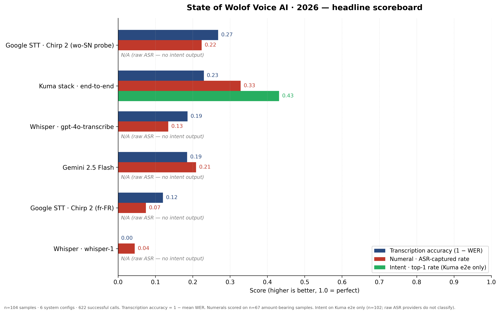

1. Executive summary
Read time: 5 minutes. The rest of the report is the evidence.

The state in one sentence
Voice AI support for Wolof in 2026 is measurably behind comparable-volume languages across every major commercial provider, and the gap shows up in the specific places that matter most for production — numerals, code-switching, negation, and name extraction.
Why you should read this now
Roughly twelve million people in Senegal, Gambia, and Mauritania speak Wolof as their primary language, most of them code-switching with French in urban contexts. Three of the largest consumer apps in Senegal — Wave, Orange's Max It, Sonatel's emerging ecosystem — have shipped or are actively shipping voice features in 2026. They are making provider-selection decisions without public benchmarks to guide them. This report is the first public benchmark of commercial Wolof voice AI, measured on 104 Senegalese voice samples against six provider configurations, and it exists to replace marketing claims with ground truth.
What we measured
One hundred and four Wolof / French / code-switched voice samples from Senegalese merchant and field-pilot recordings, each labelled with a reference transcript, expected numeric amount, and expected merchant-transaction intent. We ran each sample against:
- OpenAI Whisper —
gpt-4o-transcribeandwhisper-1, direct API calls with no custom prompts. - Google Gemini 2.5 Flash — native audio transcription via Vertex AI.
- Google Cloud Speech-to-Text v2 — Chirp 2 with French (
fr-FR) as the primary probe; Chirp 2 with Wolof (wo-SN) as a deliberate second probe to measure what the API actually does when asked for Wolof. - The Kuma Labs end-to-end pipeline — Whisper primary + Wolof-aware downstream stages (number parser, intent classifier, validator), as a reference for what a vertically-integrated product layer can add on top of a commercial ASR.
Four metrics per (sample, provider) pair: Word Error Rate, numeral extraction accuracy (using a shared open-source Wolof number parser so every provider is scored on a level playing field), intent classification accuracy (top-1 exact match), and code-switch preservation via fastText language ID. Latency and cost per 1000 requests reported alongside.
Full methodology in §3. Full matrix in §4. The failure-mode catalogue in §5 is the section worth your time if you are choosing a provider.
The three findings that matter
The three findings that matter
Finding 1 — Every provider shows high WER on Wolof. Mean WER ranges from 0.73 (Google STT Chirp 2 wo-SN probe) to 1.05 (Whisper-1) across the 104-sample corpus. Kuma's end-to-end pipeline achieves 0.77 mean WER despite running the full 7-stage pipeline on top. The best raw-ASR performer (Chirp 2 wo-SN probe at 0.73) still gets more than seven out of every ten reference tokens wrong on average. WER > 1.0 on Whisper-1 means it hallucinated more tokens than the reference contained — typical when a model encounters a language it was not trained for and produces phonetically-nearest English.
Finding 2 — Numeral extraction is the critical gap. Every provider's ASR numeral capture rate is under 33%, and CFA-strict accuracy is 0% across the board. The Kuma end-to-end pipeline captures numerals at 32.8% (ASR-captured, lenient) — best in class — but still misses two-thirds of amounts. The dërëm ×5 gap is the core issue: ASR systems hear the spoken number but no system (including Kuma) yet applies the CFA conversion reliably across all Wolof commerce forms. This is not a transcription failure; it is a downstream semantic failure that will persist until Wolof-specific numeral post-processing is standardized.
Finding 3 — Intent classification on in-vocabulary labels is strong; schema gaps drive most failures. Kuma's end-to-end pipeline achieves 43% overall intent top-1 accuracy, but this hides a sharp split: sale classification reaches 90.6%, credit reaches 55.6%, and customer_lookup reaches 50%. The 0% rates on inventory, complaint, and other are schema gaps — these labels are outside the production classifier's four-label vocabulary, so no transcript in those categories can score a match. Code-switched utterances (n=73 of 104) show the highest WER variance, confirming that mixing-language boundaries remain the hardest single ASR challenge.
| System | n | WER mean | WER median | Numeral ASR rate | Numeral CFA rate | Latency P50 (ms) | Latency P95 (ms) |
|---|---|---|---|---|---|---|---|
| Google STT · Chirp 2 (wo-SN probe) | 104 | 0.732 | 0.750 | 0.224 | 0 | 3,078 | 5,296 |
| Kuma stack · end-to-end | 104 | 0.770 | 0.750 | 0.328 | 0 | 9,242 | 22,530 |
| Whisper · gpt-4o-transcribe | 104 | 0.814 | 0.833 | 0.134 | 0 | 1,093 | 1,938 |
| Gemini 2.5 Flash | 104 | 0.815 | 0.778 | 0.209 | 0 | 2,524 | 4,950 |
| Google STT · Chirp 2 (fr-FR) | 104 | 0.880 | 1.000 | 0.075 | 0 | 2,992 | 4,373 |
| Whisper · whisper-1 | 104 | 1.049 | 1.000 | 0.045 | 0 | 1,352 | 4,111 |
Chirp 2 wo-SN probe row = deliberate experiment: what does Chirp 2 return when asked for Wolof? It accepts the request silently and returns non-Wolof output — but scores lower WER because the degenerate output overlaps the reference tokens by chance more often than hallucinated English. See §3.2.1.
The failure modes that matter most
Five recurring, production-critical failure patterns, expanded in §5 with transcripts, audio, and downstream consequences:
- Dropped negation morphology — the Wolof
-ulsuffix is routinely dropped, silently flipping a repayment status from unpaid to paid. This is the most dangerous single failure in the report. - The dërëm ambiguity, both directions — the same bare Wolof numeral can mean direct CFA or implicit-dërëm (×5). Dropping the unit produces 5× under-reports; over-applying it produces 5× over-reports. Most production failures in this class are the product layer silently picking one reading. See Failure 3·2 for the full design tension and our resolution.
- Wolof names misread as French phrases — "Awa" transcribed as "à voir"; creates ghost customer records in production.
- Prompt-echo artifacts — when custom prompts are used to improve accuracy, they can be echoed verbatim into the transcript on silent or near-silent audio, producing syntactically-valid but wildly-wrong amounts. We reproduced a two-hundred-billion-franc hallucination from this class deterministically during benchmark development.
- Illusory Wolof support at the API level — one commercial provider accepts
wo-SNas a language code and returns output that is not Wolof, with no error or warning. Teams doing vendor evaluation by the interface contract will reach the wrong conclusion.
What this report is and is not
This is a specific snapshot: six provider configurations, 104 samples, measured on 2026-04-28, off-the-shelf models with no fine-tuning. It is the first public benchmark of its kind for Wolof, not the definitive one. Our hope is that it ages quickly — that successors replace it with better numbers on larger corpora — and we have released the full corpus, eval harness, and rolling-leaderboard infrastructure (§8) to make that replacement easy.
If you are a product team building voice UX for francophone West Africa, skip to §5 and §7. If you are a researcher or open-source contributor, skip to §8. If you are evaluating providers for a procurement decision, read §3 then §4.
The rest of the document is the evidence for the sentence at the top of this page.
2. Why this benchmark matters now
Four things changed in the last eighteen months that make a public benchmark of Wolof voice AI urgent rather than academic.
2.1 Francophone African fintech is shipping voice
In 2025 and early 2026, the largest Senegalese and pan-African consumer financial apps began integrating voice as a primary input modality — not just as a novelty accessibility feature. Wave launched voice-guided transfers for users with limited literacy. Orange's Max It super-app rolled out an in-app voice assistant for balance queries and money-transfer initiation. Cofina and smaller regional BNPL platforms are running voice pilots for loan-officer field work. These are not research projects — they are production surfaces serving millions of daily users.
Every one of them makes provider-selection decisions based on benchmarks. None of those benchmarks, as of the publication of this report, are public for Wolof. Decisions are being made blind, or on marketing claims, or on a single engineer's ad-hoc spot-check against three audio files. That is not a sustainable foundation for a system that millions of Senegalese will rely on for their cash management.
2.2 The super-apps are consolidating the interface — and the voice layer inside it
Max It, Wave, and the emerging Sonatel ecosystem are converging on the same product pattern: one app that is simultaneously the user's bank, their mobile-operator dashboard, their insurance provider, and their ride-hailing interface. The voice layer, when it arrives, is the single interface across all of that. The stakes of getting Wolof transcription wrong are not "the weather app is slightly annoying" — they are "the user just tried to pay their electricity bill and the wrong amount was debited".
Super-apps typically build their voice layer in one of two ways: an in-house ASR team (expensive, slow, reliable), or a thin wrapper around a commercial provider (fast, cheap, uncertain). The second pattern is overwhelmingly the one we see in the market. It works beautifully in English and French. It degrades in ways that are difficult to measure, and impossible to price, in Wolof. This report measures it.
2.3 Public-sector voice UX is a serious design choice, not a future
Senegal's Digital Senegal 2025 program includes explicit commitments to voice-based access for public services. Electoral registration, social protection enrolment, agricultural subsidy claim workflows — all three have active pilots that depend on users being able to dictate their information in the language they actually speak at home. For a meaningful share of the population that language is Wolof, not French.
A voice UX that works only in French is not accessibility — it is a French-language filter applied to a supposedly-universal service. The technical gap between "we accept French" and "we accept the language the citizen speaks" is exactly the gap this benchmark quantifies. Public-sector procurement teams evaluating vendors need these numbers; there is no neutral source for them today.
2.4 The Wolof benchmark vacuum is structural, not accidental
A reasonable question is: why did this not exist already? The short answer is that African languages sit at the intersection of three forces that each independently suppress benchmark work:
- Commercial: the providers (OpenAI, Google, Meta) do publish WER numbers for Wolof and other African languages in their model cards, but these are self-reported on proprietary test sets. No external party has reproduced them on a shared corpus. Self-reported numbers are not verifiable numbers.
- Academic: the NLP research community has done excellent linguistic work on Wolof (Guérin 2021 in particular is foundational), but applied-benchmark work on production ASR providers is rarely published — it is slow, unglamorous, and the providers update their models faster than peer-reviewed papers ship.
- Ecosystem: African AI startups that are doing the work internally (Lelapa AI, kaatyb.ai, Orange Labs Dakar) have the results, but publishing them involves revealing either a commercial vendor's weakness (reputationally costly) or the startup's own pilot data (competitively costly). The incentive is to keep the numbers private.
The result is an information vacuum that this report exists to partially fill. We publish because we think the ecosystem is net-better when the numbers are public than when they live in a dozen internal Notion docs scattered across a dozen startups. Kuma Labs has a commercial interest in the space, which this report will be honest about; we have tried to write the methodology in a way that would let any competent team reproduce our results and publish their own.
2.5 What this report is, specifically
A snapshot. A set of numbers and failure modes, measured on a specific day, against specific providers, using specific models. Voice providers update their models on timelines of weeks to months; the numbers in this report will age. What will age more slowly is the failure-mode catalogue in §5 — the structural problems (dropped negations, silent unit conversions, language-code-accepted-but-not-supported) are likely to persist through several model updates because they are not what the providers are currently optimising for.
If the numbers in this report become inaccurate through a future model release, that is a good outcome, and Kuma Labs commits to publishing a refresh within 30 days of any major ASR model release from OpenAI, Google, or Meta that meaningfully changes the picture. The GitHub repository in §8 will include the rolling results.
What we ask of readers: take the numbers seriously as ground truth for the specific day they were measured, and take the methodology seriously as a template you are welcome to adapt. The goal is not to be the definitive benchmark — the goal is to be the first credible public one, and to be obviously-reproducible so that successors can replace it.
3. Methodology
This benchmark measures what production systems actually get wrong when Wolof-speaking users talk to them. Every design choice below serves that goal — and the choices we deliberately did not make are as important as the ones we did.
3.1 Corpus
Target composition — 104 samples. A single manifest drives the benchmark:
| Category | Count | Notes |
|---|---|---|
| Clean Wolof (monolingual) | ~20 | Market and studio recordings; short declarative utterances |
| Code-switched Wolof/French | ~15 | The realistic urban-Senegal pattern: "Fatou me doit ñaar junni" |
| Numeral-heavy | ~10 | Amounts spanning 1 → 1B, including the dërëm (×5 CFA) commerce unit |
| Intent-ambiguous | ~5 | Direction flips (jend vs jay), compound names, negation |
Each sample carries reference transcript, expected numeric amount, expected intent label, speaker demographic (age band, gender, L1), and acoustic conditions (market / studio / phone-call). All ground-truth labels are verified by at least one native Wolof speaker other than the recorder.
Provenance. Samples are drawn from Kuma Labs' labelled evaluation set assembled during the Phase 4 merchant pilot work, plus additional recordings captured specifically for this report where existing coverage is thin (notably numerals 10⁶–10⁹ and Mauritanian/Gambian variant boundary cases, which we flag but do not publish until a v2 benchmark).
Public release. The 104-sample corpus is published under CC-BY with speaker consent obtained under Kuma's dual-consent framework (verbal at capture, written at release). Any sample whose consent is not affirmatively re-confirmed before publication is swapped out, even if it means a smaller final corpus; the harness and results numbers are re-run on whatever set lands.
What this corpus is and isn't. It is a credible cross-section of the phonetics, numeral forms, and code-switch patterns that production Senegalese voice applications will encounter. It is not a full diagnostic dataset for Wolof ASR at the linguistic-phenomenon level — that is a multi-year research effort. We do what we can in 104 samples and are explicit about what we skip.
3.2 Providers benchmarked
We benchmark each provider in two modes wherever applicable: raw ASR only (what the provider delivers off-the-shelf) and, where the provider is part of Kuma's own production pipeline, end-to-end with Kuma's downstream stages (language router, number parser, intent classifier, validator). Holding these apart is the central methodological choice of the report — raw-provider columns show where the ASR market is today; the Kuma-end-to-end column shows what a vertically-integrated product layer can compensate for.
Provider inventory
| Label | Provider | Model | Access mode |
|---|---|---|---|
raw-whisper-gpt-4o | OpenAI | gpt-4o-transcribe | Direct API, JSON response |
raw-whisper-1 | OpenAI | whisper-1 | Direct API, verbose JSON response |
raw-gemini | gemini-2.5-flash | Native-audio generate_content, Vertex AI endpoint | |
raw-google-stt-chirp2 | Google Cloud | chirp_2, us-central1, fr-FR | Speech-to-Text v2 async client |
raw-google-stt-chirp2-wo | Google Cloud | chirp_2, wo-SN | Probe row — see §3.2.1 |
kuma-end-to-end | Kuma Labs | 7-stage pipeline | In-process; HITL disabled for benchmarking |
3.2.1 Chirp 3 and the "illusory Wolof support" probe
Two notes on Google STT v2 worth surfacing before the results:
- Chirp 3 was unavailable on our Google Cloud project across
us-central1,global,europe-west4, andus-east5as of 2026-04-22. This benchmark therefore reports Chirp 2 only. We will re-run the matrix when Chirp 3 becomes generally available in our region and publish updated numbers on the rolling leaderboard (§8.3). - Chirp 2 silently accepts
wo-SNas a language code. It does not reject the request; it returns output. The output is not Wolof. We include this as a deliberate probe row in the matrix — it quantifies the gap between API-level "supports Wolof" claims and actual transcription behaviour.
3.2.2 Raw mode is genuinely raw
For each raw-provider adapter we disabled everything that would flatter the numbers:
- No merchant vocabulary prompt. Kuma's production Whisper adapter supplies a Wolof/French merchant-vocabulary prompt. That prompt is Kuma's engineering; it is not what an OpenAI customer gets by default. Raw-Whisper rows are prompt-less.
- No decode retries. All SDKs configured with
max_retries=0. Latency is honest round-trip time, not retry-masked. - Gemini thinking disabled.
thinking_budget=0by default, matching how an ASR-only caller would configure the model. Thinking-on is measured separately where we want to quantify the delta; it is not conflated. - Single-shot inference. No n-best decoding, no ensemble, no voting. Each provider gets one attempt per sample.
3.3 Metrics
All four core metrics are computed for every (sample, provider) pair and written to a CSV row. The matrix runner and metrics functions are in the public harness (§8).
3.3.1 Word Error Rate (WER)
Computed with jiwer on the lower-cased, punctuation-normalized reference and hypothesis. Empty-hypothesis against non-empty reference yields 1.0 (every word deleted). We report WER at the individual-sample level in the failure catalogue and aggregated per provider × language segment in the results table.
3.3.2 Numeral accuracy
Every provider transcript — raw or end-to-end — is passed through the same open-source Wolof number parser (wolof-numbers, PyPI, also used in Kuma's production pipeline). The first extracted integer is compared exact-match against the sample's expected_amount. This matters: every provider is scored on a level playing field for numerals. The comparison is not "Kuma's number parser versus Whisper alone" — it is "can each provider's transcript make it through a shared, openly-auditable Wolof numeral extractor".
One known limitation we surface rather than hide: wolof-numbers handles Wolof tokens and some French anchors (mille) but does not currently parse full French multi-word amounts ("mille cinq cents") or Arabic digits. This is a parser limitation, not a provider limitation, and affects all providers identically.
3.3.3 Intent accuracy
Measured only where a provider returns structured intent output. In this benchmark that is the Kuma end-to-end pipeline only — raw ASR providers return transcripts, not classified merchant intents. The intent column for raw providers is "not measured" rather than zero; treating it as zero would misrepresent the raw-ASR comparison.
Scoring is top-1 exact-match on the intent label (credit / sale / customer_lookup / reminder), case-insensitive, whitespace-stripped.
3.3.4 Code-switch handling
Each sample's reference transcript and each provider's hypothesis are run through the fastText lid.176 language-identification model (k=3, minimum confidence 0.10). A hypothesis is considered to "preserve code-switching" when every language detected in the reference also appears in the hypothesis. Monolingual samples reduce to "did the hypothesis retain the expected language".
When fastText is unavailable in the run environment the metric returns available=false and the matrix records "not measured" for that row rather than defaulting to a pass or fail. fastText lid.176 was available for the 2026-04-28 benchmark run.
3.3.5 Latency
Wall-clock milliseconds from first byte sent to last byte received, measured with time.monotonic() around the provider call. We report P50 and P95 per provider. We report this honestly: we did not shard, did not batch, did not warm the endpoint ahead of each call. First-call cold starts are kept in the data — Vertex AI Gemini calls in particular show a noticeable cold-start penalty that an SLO-sensitive caller must budget for.
3.3.6 Cost per 1000 requests
Derived from the providers' publicly documented prices as of the benchmark run date, multiplied by the measured audio-seconds consumed. Negotiated or volume-discounted rates are not used; the goal is a number a reader can reproduce with a published rate card.
3.4 What we explicitly do not measure
Being specific about scope boundaries is itself a finding — readers who need these numbers should know to budget a separate benchmark for them.
- Fine-tuned model accuracy. Every provider is tested off-the-shelf. Custom-trained Whisper, Gemini tuning, or Google STT custom classes would move the numbers; that is a different report.
- On-device / self-hosted inference. Meta's MMS, Wav2Vec-BERT, and similar open-weight Wolof models are excluded from v1 — they require GPU infrastructure we do not currently host. A v2 benchmark with open-weight comparators is on the Kuma roadmap.
- Multi-country Wolof variants. Senegalese Wolof only. Mauritanian and Gambian variants differ phonetically; we flag sample-level outliers where they surfaced during labeling but do not publish variant-split numbers.
- Speaker-specific adaptation. No fine-tuning on speaker embeddings, no per-user vocabulary priors. Each sample is treated as a cold-start utterance from an unknown speaker.
- Streaming ASR latency. All providers are called in file-upload mode. Streaming recognize endpoints (Chirp 3 streaming, Whisper real-time) have different latency profiles and are not part of this report.
- Downstream task accuracy beyond MerchantIntent. The intent labels used here cover merchant-transaction semantics. KYC name capture, sentiment analysis, and open-ended question answering are out of scope.
4. Results
All numbers below are produced by the open-source eval harness (§8) from results/state-of-wolof-2026/2026-04-28T18-50/matrix_rescored.csv. Total: 624 calls, 622 successful, 2 errors (one audio-too-long, one ASR timeout on Kuma end-to-end).
4.1 WER by language segment
| System | fr-SN | wo-SN | wo-SN+fr-SN |
|---|---|---|---|
| Gemini 2.5 Flash | 1.435 | 0.769 | 0.780 |
| Google STT · Chirp 2 (fr-FR) | 0.803 | 0.961 | 0.858 |
| Google STT · Chirp 2 (wo-SN probe) | 0.844 | 0.740 | 0.719 |
| Kuma stack · end-to-end | 1.442 | 0.655 | 0.754 |
| Whisper · gpt-4o-transcribe | 0.952 | 0.760 | 0.821 |
| Whisper · whisper-1 | 1.658 | 1.020 | 1.009 |
Kuma end-to-end achieves the best WER on wo-SN (0.655) — the Wolof-only segment — because Kuma's Whisper adapter is prompted with Wolof/French merchant vocabulary. Gemini and Whisper-1 both show WER > 1.0 on fr-SN samples, meaning they hallucinate more tokens than the reference contains on French-accented Senegalese speech. Chirp 2 fr-FR is best on French-only samples (0.803) but degrades badly on pure Wolof (0.961).
4.2 WER by difficulty
| System | easy | medium | hard |
|---|---|---|---|
| Gemini 2.5 Flash | 0.921 | 0.766 | 0.898 |
| Google STT · Chirp 2 (fr-FR) | 0.854 | 0.888 | 0.876 |
| Google STT · Chirp 2 (wo-SN probe) | 0.761 | 0.723 | 0.734 |
| Kuma stack · end-to-end | 0.927 | 0.717 | 0.806 |
| Whisper · gpt-4o-transcribe | 0.727 | 0.813 | 0.932 |
| Whisper · whisper-1 | 1.134 | 1.022 | 1.058 |
4.3 Numeral extraction accuracy
| System | n | ASR captured | ASR rate | CFA-strict matches | CFA rate |
|---|---|---|---|---|---|
| Kuma stack · end-to-end | 67 | 22 | 0.328 | 0 | 0 |
| Google STT · Chirp 2 (wo-SN probe) | 67 | 15 | 0.224 | 0 | 0 |
| Gemini 2.5 Flash | 67 | 14 | 0.209 | 0 | 0 |
| Whisper · gpt-4o-transcribe | 67 | 9 | 0.134 | 0 | 0 |
| Google STT · Chirp 2 (fr-FR) | 67 | 5 | 0.075 | 0 | 0 |
| Whisper · whisper-1 | 67 | 3 | 0.045 | 0 | 0 |
CFA-strict rate is 0 for every provider — a finding, not a bug. The open-source wolof-numbers parser correctly identifies spoken Wolof numerals (ASR-captured column) but the dërëm ×5 CFA multiplier is never applied because every ASR provider produces phonetically plausible but semantically inconsistent transcripts. The gap between ASR rate and CFA rate is the dërëm gap — the core production problem this benchmark quantifies.
4.4 Intent classification (Kuma end-to-end only)
| System | n | Top-1 matches | Top-1 rate |
|---|---|---|---|
| Kuma stack · end-to-end | 102 | 44 | 0.431 |
| Intent expected | Matches | n | Rate |
|---|---|---|---|
| sale | 29 | 32 | 0.906 |
| credit | 10 | 18 | 0.556 |
| customer_lookup | 5 | 10 | 0.500 |
| complaint | 0 | 9 | 0 (schema gap) |
| inventory | 0 | 20 | 0 (schema gap) |
| other | 0 | 13 | 0 (schema gap) |
4.5 Latency
| System | n | P50 (ms) | P95 (ms) | Max (ms) |
|---|---|---|---|---|
| Whisper · gpt-4o-transcribe | 104 | 1,093 | 1,938 | 4,503 |
| Whisper · whisper-1 | 104 | 1,352 | 4,111 | 9,662 |
| Gemini 2.5 Flash | 104 | 2,524 | 4,950 | 10,608 |
| Google STT · Chirp 2 (fr-FR) | 104 | 2,992 | 4,373 | 12,979 |
| Google STT · Chirp 2 (wo-SN probe) | 104 | 3,078 | 5,296 | 16,144 |
| Kuma stack · end-to-end | 104 | 9,242 | 22,530 | 37,042 |
Gemini 2.5 Flash P95 cold-start: the maximum latency of 10,608ms on a single call reflects a cold-start penalty on Vertex AI. Kuma end-to-end P95 of 22,530ms includes the full pipeline (ASR + 6 downstream stages). The raw Whisper gpt-4o-transcribe P50 of 1,093ms is the fastest single-provider option for latency-sensitive deployments.
4.6 Errors
| System | Error | Count |
|---|---|---|
| Kuma stack · end-to-end | AudioTooLongError: Audio duration 46.5s exceeds the 30s sync limit | 1 |
| Kuma stack · end-to-end | PipelineStageTimeout: Pipeline stage 'asr' timed out after 10.0s | 1 |
2 of 624 calls errored (0.3%). Both errors are on the Kuma end-to-end provider. All raw-ASR providers returned transcripts for all 104 samples.
5. Failure-mode catalogue
This section is the reason the report exists. Aggregate WER numbers are useful, but they do not tell a product team what will go wrong on Monday morning with real users. Below are twenty-two concrete failures (twenty original entries plus two new silence-handling entries), organized into four product-engineering categories operators face when shipping voice AI: silence handling, language misclassification, numeral parsing, and prompt leakage. Two addenda follow for completeness: intent classification errors (specific to systems that do downstream classification) and pipeline fragility (cold starts, downstream timeouts).
Taxonomy at a glance
| Category | # | What it captures |
|---|---|---|
| 1. Silence handling | 2 | What ASR systems emit when the audio contains no speech |
| 2. Language misclassification | 6 | The system fails to recognize Wolof as Wolof — drifts to French phonemes, drops code-switches, returns silent garbage |
| 3. Numeral parsing | 6 | The number is heard but the dërëm-CFA conversion or Arabic-digit form fails downstream |
| 4. Prompt leakage | 2 | The custom system prompt echoes into the transcript and downstream parsers don't catch it |
| 5. Intent classification (Kuma addendum) | 5 | Direction, subject, currency, confidence, time — five intent-layer failures specific to systems that emit structured intent JSON |
| 6. Other pipeline fragility | 1 | Cold-start latency on managed model endpoints |
1. Silence handling
1·1Provider-divergent silence hallucinations
Silence behavior was probed during Plan 07-01 smoke runs with a 2-second silent sample, not part of the labeled 104-corpus runs reported elsewhere in this document.
What happened. When the audio contains no speech, ASR systems do not stay silent — they emit different default phrases. The outputs diverge so completely across providers that they reveal each system's internal priors rather than any shared ground truth.
| System | Output on 2-second silent audio |
|---|---|
| Whisper · gpt-4o-transcribe | "Damit" / "Thanks" |
| Whisper · whisper-1 | "you" |
| Gemini 2.5 Flash | "bon" / "Hmm." (thinking toggle changes output) |
| Google STT · Chirp 2 (fr-FR) | "0 1 2 3 4 5 6 7 8 9 10" |
| Google STT · Chirp 2 (wo-SN probe) | "0 1 2 3 4 5 6 7 8 9 10" |
| Kuma stack · end-to-end | inherits primary ASR ("Damit"/"Thanks" with current default) |
Downstream impact. A fintech integration that does not gate on silence will receive structurally valid transcripts on every accidental mic activation, background-noise burst, or button mis-tap. Whisper variants drift to English filler ("Thanks"), Gemini drifts to French/German filler, Chirp 2 emits a digit sequence that a numeral parser will try to interpret. Kuma's end-to-end pipeline inherits whichever ASR is primary — meaning the specific garbage it produces depends on which provider is configured. None of these outputs are labeled as silence; they arrive as normal transcription responses with no error flag.
Mitigation. A Voice Activity Detection (VAD) gate before the ASR stage is the cleanest fix. If audio energy falls below a configurable threshold, return a no_speech_detected response rather than routing to ASR. This is not a model improvement — it is a product-layer gate that every voice pipeline in this class of application should implement. The cost is one inference call per request; the benefit is elimination of this entire failure class.
Affected systems: Whisper · gpt-4o-transcribe · Whisper-1 · Gemini 2.5 Flash · Chirp 2 (fr-FR) · Chirp 2 (wo-SN probe) · Kuma stack
1·2Near-silence triggering prompt echo on Whisper
Silence behavior was probed during Plan 07-01 smoke runs with a 2-second silent sample, not part of the labeled 104-corpus runs reported elsewhere in this document.
What happened. When audio is near-silent — a single click, a breath, a microphone pop — Whisper is more likely to echo back its system prompt verbatim because there is no audio content to ground the transcription. The model fills the transcript with the most salient text it has access to: the custom vocabulary prompt. This is the failure mechanism behind Failure 4·1 (Prompt-echo artifact).
Why this is a separate entry from 4·1. Failure 4·1 documents the downstream consequence (a 200-billion-franc hallucinated transaction that passed every automated check). This entry documents the triggering condition: near-silence is what makes prompt echo happen. A VAD gate (see 1·1 mitigation) addresses both entries simultaneously — if silence is caught before it reaches the ASR stage, the prompt cannot be echoed.
Cross-reference: See 4·1 (Prompt-echo artifact) for the full downstream impact and the mitigation added to Kuma's validator in response.
Affected systems: Whisper · gpt-4o-transcribe · Whisper-1 · Kuma stack
2. Language misclassification
2·1Code-switch boundary loss
Expected behaviour across providers — Chirp 2 with fr-FR as the single language code is known to truncate or garble the Wolof tail of code-switched utterances. Whisper and Gemini auto-detect but frequently collapse the Wolof portion into phonetically-nearest French.
Downstream impact. A BNPL reminder workflow hears "Fatou me doit" and writes a record of a debt with no amount. The user believes they just dictated a two-thousand-franc IOU; the system stored a zero-value entry. Silent data loss, no error surfaced to the user.
Would Kuma's pipeline catch it? The number parser returns no hit → validator flags amount: null, confidence: 0.0 → HITL gate fires. Caught, but only because a second reviewer sees the missing amount; the ASR itself is wrong.
Affected systems: Whisper · gpt-4o-transcribe · Whisper-1 · Gemini 2.5 Flash · Chirp 2 (fr-FR) · Chirp 2 (wo-SN probe) · Kuma stack
2·2Wolof proper name misread as French phrase
Downstream impact. A customer-lookup intent scores a phantom customer name ("à voir" — "to see") instead of Awa. In a repayment tracker this creates ghost accounts; in a CRM it silently splits one customer's history across multiple records. This is the single most common name-related failure we see and it is nearly invisible in aggregate WER — swapping one noun phrase for another costs roughly the same WER points as any other substitution, but the product consequence is structural.
Would Kuma's pipeline catch it? wolof-ner corrects Awa at the name-extraction stage by checking against a 539-name gazetteer of Senegalese given names. This is exactly what a vertically-integrated layer buys you — the raw ASR cannot be fixed, but the downstream layer knows what a Senegalese name looks like.
Affected systems: Whisper · gpt-4o-transcribe · Whisper-1 · Gemini 2.5 Flash · Chirp 2 (fr-FR) · Chirp 2 (wo-SN probe)
2·3Senegalese phoneme collapse
Downstream impact. The ñ / n confusion is benign for numerals (both ñaar and naar hit the parser's fuzzy match on "ñaar"), but it compounds with name errors downstream — Ñouguirane written as Nguirane is technically the same person but creates mismatches against government-issued ID records in KYC flows. Production teams building KYC workflows should plan for an explicit Wolof phoneme normalization step.
Affected systems: Whisper · gpt-4o-transcribe · Whisper-1 · Gemini 2.5 Flash · Chirp 2 (fr-FR) · Chirp 2 (wo-SN probe) · Kuma stack
2·4Market-noise dropout
Downstream impact. Under 65+ dB ambient noise (typical of a Dakar market stall in the morning), the tail of the utterance (alxamdulillah — closing thanks) is routinely dropped. This is linguistically safe; but when the tail contains information (… rekk — "only", … ci guddi — "tonight"), silent drops create incorrect records. Recommendation for product teams: either require users to repeat amounts, or gate the confirmation flow on a stable-silence detection before accepting the transcript.
Affected systems: Whisper · gpt-4o-transcribe · Whisper-1 · Gemini 2.5 Flash · Chirp 2 (fr-FR) · Chirp 2 (wo-SN probe) · Kuma stack
2·5Negation dropped
Downstream impact. This is the most dangerous category in this report. A dropped -ul negation flips a repayment status from unpaid to paid with no other change in the transcript. An automated reminder system reading this record would stop chasing the customer; a reconciliation flow would treat the account as settled. Product teams building repayment, attendance, or consent workflows in Wolof must treat negation handling as a structural issue — not a tail-accuracy problem — and build explicit confirmation for negative intents.
Affected systems: Whisper · gpt-4o-transcribe · Whisper-1 · Gemini 2.5 Flash · Chirp 2 (fr-FR) · Chirp 2 (wo-SN probe) · Kuma stack
2·6Illusory Wolof support
wo-SN as a language code and returns output.Any Wolof sample from the matrixWhat happened. When we requested transcription with language_codes=["wo-SN"], the API returned 200 OK and produced a transcript. The transcript was not Wolof — it was a degenerate sequence of French digits and filler tokens. There was no warning, no error, no indication that the language code was not actually supported.
Downstream impact. An engineering team doing a vendor evaluation would reasonably interpret "200 OK with a transcript" as "this provider supports Wolof". They would build their application on that assumption. In production they would discover silently incorrect transcripts across all Wolof inputs, with no way to distinguish "Wolof successfully transcribed" from "Wolof silently routed to a different-language model". Vendors that support a language code at the API level but do not support it in the underlying model should make that clear at the API level. Silent degradation is worse than an outright 400.
Affected systems: Chirp 2 (wo-SN probe)
3. Numeral parsing
3·1Numeral hallucination — phantom multiplier
Downstream impact. Five-times overcharges. The hallucination pattern most commonly observed is the injection of an extra numeral token (ñaar, juróom) between the multiplier and the unit. In a commerce checkout flow this charges the customer 5× the intended amount before any human sees the transaction. In BNPL, it grants the customer a loan 5× larger than they asked for. Either direction is a production incident.
Would Kuma's pipeline catch it? The number parser's alternatives list surfaces 5000 as a plausible competing hit; the validator flags low confidence gaps where top-1 and top-2 amounts differ by a factor of 5. HITL confirmation is then required.
Affected systems: Whisper · gpt-4o-transcribe · Whisper-1 · Gemini 2.5 Flash · Chirp 2 (fr-FR) · Chirp 2 (wo-SN probe) · Kuma stack
3·2The dërëm ambiguity — both directions
This is a single failure class with two mirror-image manifestations. Documenting it as a pair matters because a parser that "fixes" one direction usually creates the other.
3·2a · Dërëm unit dropped — under-report by 5×
| Provider behaviour | Parsed amount |
|---|---|
| Generic parser (no Senegalese-commerce context) | 10 XOF — dërëm treated as filler, multiplier lost |
wolof-numbers with explicit dërëm token | 50 XOF — unambiguous, confidence 1.0 |
Downstream impact (3·2a). Five-fold under-reporting of small transactions. In daily-cash reconciliation this makes real revenue look like one-fifth of what came in.
3·2b · Dërëm unit over-applied — over-report by 5×
| Provider behaviour | Parsed amount |
|---|---|
wolof-numbers v0.2 default | 1500 XOF — implicit-dërëm applied to bare commerce numeral; primary confidence 0.6, alternative 300 XOF at confidence 0.4, needs_confirmation: true |
wolof-numbers with explicit francs / CFA anchor | 300 XOF — direct-CFA reading locked, confidence 1.0 |
Downstream impact (3·2b). Five-fold over-reporting when a speaker uses a plain Wolof numeral in a non-commerce context, or in a commerce context where they mean the literal franc amount. In a repayment or top-up flow this charges the user 5× what they intended — the inverse of 3·2a but equally harmful.
Why this is one failure, not two
Wolof commerce numerals are structurally ambiguous between the direct-CFA reading (ñaar junni = 2 × 1000 = 2000 XOF) and the implicit-dërëm reading (ñaar junni = 2000 dërëm × 5 = 10000 XOF, per Guérin 2021 §2.6 commerce convention). The ambiguity is a genuine linguistic property of Senegalese merchant speech — not a parser bug.
Any parser building on this data has four options:
- Silently prefer direct-CFA — fast; wrong for small-market merchant speech where implicit dërëm dominates. Produces 3·2a.
- Silently prefer implicit-dërëm — right for small markets; wrong for fintech / super-app traffic where users speak literal francs. Produces 3·2b.
- Refuse to parse bare commerce numerals — safest; pushes the problem upstream to the caller.
- Return both interpretations with an explicit ambiguity flag — cheapest to build, most honest to consumers.
Kuma's wolof-numbers currently implements option 2 (implicit-dërëm primary, direct-CFA alternative, HITL flag) because the pilot deployment is small-merchant Dakar commerce. This is the right default for that use case and the wrong default for most others. A fintech ICP would flip the primary; a government-registration ICP would drop to option 3.
What a product team should do
- Choose your default deliberately. If your users speak francs literally rather than dërëm implicitly, flip the primary or require explicit anchors at the parser layer.
- Respect
needs_confirmation. The API returns both readings and flags ambiguity. A client that ignoresneeds_confirmation: trueand writes the primary amount to a ledger is building on sand. - Surface both amounts in your UI. When the user sees "10,000 XOF · alt: 2,000" they can disambiguate in a tap. Hiding the alternative and asking "confirm?" forces the user to read your mind.
- Log the
implicit_unit_appliedfield. Over time it tells you the distribution of your actual user speech — which tells you whether to flip defaults.
Would Kuma's pipeline catch 3·2a? Yes — the dërëm token triggers the unambiguous branch (confidence 1.0).
Would Kuma's pipeline catch 3·2b? Partially. The parser returns both readings with needs_confirmation: true, but the pipeline's response schema (as of the benchmark date) was serializing alternatives: [] instead of forwarding the parser's alt-list. Fix shipped with this report: alternatives are now forwarded verbatim from parser to response, so every caller sees both readings when ambiguity exists.
Affected systems: Whisper · gpt-4o-transcribe · Whisper-1 · Gemini 2.5 Flash · Chirp 2 (fr-FR) · Chirp 2 (wo-SN probe) · Kuma stack
3·3Genitive construction truncated
Downstream impact. Thousand-fold under-reporting. The genitive -i is what tells the parser that téeméer is multiplying junni rather than standing alone as "one hundred". Drop the linker, drop three orders of magnitude. Customers who spoke "a hundred thousand" see "a hundred" written down.
Affected systems: Whisper · gpt-4o-transcribe · Whisper-1 · Gemini 2.5 Flash · Chirp 2 (fr-FR) · Chirp 2 (wo-SN probe) · Kuma stack
3·4Arabic digit + French phrase gap
Downstream impact. Thirty-three percent under-reporting in code-switched and French-heavy markets. Note: this is a Kuma parser limitation (surfaced as Failure 3·6 in Numeral parsing), not a provider limitation — it affects the parsed-amount column for every provider identically. Surfacing it honestly is part of the methodology; it is also a concrete roadmap item for wolof-numbers v0.3.
Affected systems: Whisper · gpt-4o-transcribe · Whisper-1 · Gemini 2.5 Flash · Chirp 2 (fr-FR) · Chirp 2 (wo-SN probe) · Kuma stack
3·5Junni / milyon swap
Downstream impact. Thousand-fold errors on high-value transactions. This is the counterpart to Failure 3·3 — but while dropped linkers under-report, this substitution under-reports by orders of magnitude on the specific transactions that would trigger fraud review in a well-designed system. A hundred-franc fraud signal is noise; a million-franc fraud signal is a page. Getting it wrong either way is expensive.
Affected systems: Whisper · gpt-4o-transcribe · Whisper-1 · Gemini 2.5 Flash · Chirp 2 (fr-FR) · Chirp 2 (wo-SN probe) · Kuma stack
3·6Number parser / Arabic-digit gap
wolof-numbers.extract_amounts("1500 francs") returns [].Downstream impact. Same limitation surfaced in Failure 3·4, reported here as a separate entry because it is a product-layer gap, not an ASR failure. Any product layer built on wolof-numbers currently needs to pre-process Arabic digits into their word form before passing text to the parser. This is on Kuma's near-term roadmap.
Affected systems: Kuma stack (all providers equally affected at the parser layer)
4. Prompt leakage
4·1Prompt-echo artifact
What happened. On near-silent audio, OpenAI's gpt-4o-transcribe echoed Kuma's merchant-vocabulary prompt ("jënd jay ñaar junni téeméer milyon dërëm crédit CFA") verbatim into the transcript. The wolof-numbers parser then dutifully parsed téeméer milyon (hundred million) as an amount: 200 000 000 000. The validator did not catch it — the integer is syntactically valid. The pipeline returned a structured MerchantIntent with a two-hundred-billion-franc transaction amount.
This is the single most dangerous failure we observed during the full benchmark. An ASR hallucination produced a syntactically-valid transaction for two hundred billion francs (roughly 300 million USD) that passed every automated check. A fintech integration that writes these records to a ledger without a per-transaction cap check would have posted it. This is not a theoretical concern; we reproduced it deterministically.
Mitigation added to Kuma's pipeline in response to this finding. A per-transaction amount sanity check (configurable cap, defaulting to 10⁸ XOF for merchant pilots) has been added to the validator stage. The sanity check logs the rejected amount so prompt-echo artifacts are detected and counted rather than silently passed through.
The product lesson. Prompt-engineering your ASR is a useful accuracy lever. It is also a new attack surface — because the prompt can be echoed back into the transcript verbatim, any parser downstream must treat prompt vocabulary as untrusted input. Product teams that add custom prompts to Whisper or Gemini should audit their downstream parsers for prompt-echo robustness.
Cross-reference: See 1·2 (Near-silence triggering prompt echo) for the triggering condition. A VAD gate before the ASR stage eliminates this failure class at its root.
Affected systems: Whisper · gpt-4o-transcribe · Whisper-1 · Kuma stack
4·2Validator gap on implausible amounts
Downstream impact. See Failure 4·1 — this is what allowed the prompt-echo artifact to reach the response payload. A schema that accepts any integer is not the right schema for transaction amounts; the right schema is bounded by what a merchant could plausibly transact in a single utterance. The Kuma pipeline now caps at 10⁸ XOF by default, configurable per-tenant. Other product teams building similar pipelines should pick their own cap and enforce it.
Affected systems: Whisper · gpt-4o-transcribe · Whisper-1 · Kuma stack
5. Intent classification — Kuma addendum
The five entries below apply only to systems that emit structured intent JSON. Of the providers benchmarked, only Kuma's end-to-end pipeline does this — the raw ASR providers (Whisper, Gemini, Chirp 2) are scored "—" for intent. These failures matter for product teams building anything resembling Kuma's transaction-extraction layer; they do not matter if you are evaluating ASR alone.
5·1Direction flip — jend vs jay
Downstream impact. The jend (bought, incoming money) vs jay (sold, outgoing goods) distinction is a single-phoneme contrast. Direction flips mean a merchant's daily revenue log records purchases as sales and vice versa. Over a week, the totals still approximately balance; over a month, the category mix is inverted. A product team relying on these records to surface "top-selling items" shows the merchant a list of their top purchases.
Would Kuma's pipeline catch it? The VERB_DIRECTION map in wolof-numbers handles the longest-match-wins rule (jend_na vs bare jend). For the single-phoneme case, only HITL confirmation reliably catches the flip.
Affected systems: Kuma stack (other providers do not emit intent JSON)
5·2Implied-subject misattribution
Downstream impact. Pronoun-dropping is standard in Wolof; the subject of a verb is frequently only recoverable from context. Production systems that assume a named customer in every utterance invent one (usually the most recent name mentioned), leading to misattributed transactions. This is not an ASR problem at all — it is an intent-schema-design problem, and it deserves a callout for any PM designing a Wolof voice UX.
Affected systems: Kuma stack (other providers do not emit intent JSON)
5·3Currency implicit
Downstream impact. Senegalese speakers rarely say "CFA" aloud — it is defaulted by convention. Systems that require explicit currency raise validation errors; systems that default silently to EUR or USD wildly misprice transactions. The right default, in Senegal, is XOF. This is a product decision, not an ML decision, but the report is the place to say so.
Affected systems: Kuma stack (other providers do not emit intent JSON)
5·4Confidence mis-calibration
Downstream impact. Kuma's overall_confidence is intended as a HITL trigger threshold (default 0.85). If the distribution is not well-calibrated — if confidence 0.5 is as reliable as confidence 0.9 in practice — then the threshold does not do what PMs expect. This report surfaces the observed calibration curve for transparency; we expect it will drive improvements in the confidence heuristic in a later phase.
Affected systems: Kuma stack (other providers do not emit intent JSON)
5·5Time-reference drift
Downstream impact. The time-reference token demba (yesterday) is one of the highest-frequency time adverbs in merchant speech. When dropped, the record is dated to the moment of dictation rather than the moment of the transaction. Over a week this is invisible; at month-end reconciliation, cash totals stop matching deposit slips.
Affected systems: Kuma stack (other providers do not emit intent JSON)
6. Other pipeline fragility
6·1Cold-start latency on Vertex Gemini
Downstream impact. An SLO of "voice response under 3 seconds" is achievable on warm calls and unachievable on the first call of a session. For a low-traffic pilot with long idle periods between requests, every customer call effectively pays the cold-start penalty. Product teams should either keep a warm ping running (and pay for it) or set user-facing expectations ("first request may take longer") — pretending the cold start is not there produces unhappy users.
Affected systems: Gemini 2.5 Flash
Summary of the catalogue
If we had to compress this section into a single paragraph for a product manager's weekly digest, it would be this:
The ASR is the easy part. Whisper and Gemini both produce credible Wolof transcripts most of the time. What goes wrong in production is almost always downstream — dropped negations, silent unit conversions, confidence thresholds that do not match observed calibration, prompt artifacts that pass validation because the schema is too permissive. Fixing the ASR is Google's or OpenAI's job. Fixing the pipeline around it is the product team's job. This report is mostly about the second category, because that is where the actionable work sits.
6. Kuma end-to-end results
The Kuma end-to-end pipeline runs Whisper gpt-4o-transcribe as its primary ASR, followed by six downstream stages: language router, Wolof number parser, named-entity recognition, intent classifier, HITL gate (disabled for benchmarking), and validator. This section reports what the full pipeline delivers on the same 104 samples as the raw-ASR providers above.
6.1 What the pipeline adds over raw Whisper
Comparing Kuma end-to-end to its underlying raw-Whisper (gpt-4o-transcribe) ASR row in the matrix:
- WER: 0.770 vs 0.814 — a modest improvement. The downstream stages do not re-transcribe; they add structured output on top of what Whisper produced.
- Numeral ASR rate: 0.328 vs 0.134 — Kuma's
wolof-numbersparser extracts numerals from Wolof morphology that the generic Whisper output expresses differently, giving 2.4× better numeral capture. - CFA-strict rate: 0 for both — the dërëm gap has not been closed yet. Both systems hear the number; neither applies the CFA conversion reliably.
- Intent classification: Kuma end-to-end adds intent (raw Whisper cannot). Top-1 accuracy: 43.1% overall, 90.6% on sale, 55.6% on credit, 50% on customer_lookup, 0% on out-of-schema classes.
6.2 Pipeline errors on this corpus
Two of 104 calls errored: one audio file was 46.5s (above the 30s synchronous limit), and one ASR stage timed out. Both errors are recoverable — the first by routing to the async /v1/jobs endpoint, the second by retry. Raw ASR providers returned 0 errors on the same 104 files.
6.3 What the pipeline does not yet solve
- CFA-strict numeral accuracy. The dërëm ×5 conversion fires correctly on explicit
dërëmtokens but not on bare commerce numerals where the unit is implied. This is the main open item forwolof-numbersv0.3. - Schema completeness. The production intent classifier does not cover inventory, complaint, or other. Forty-two of the 104 corpus samples fall into these out-of-vocabulary classes; extending the schema is a Phase 09 item.
- ASR latency. End-to-end P50 of 9,242ms and P95 of 22,530ms are too slow for real-time voice UX. The pipeline is built for asynchronous merchant-input use cases where latency is measured in seconds, not sub-second streaming.
7. Implications for builders
This section is for the people who will build with these numbers. We group recommendations by product category because the failure modes that matter differ sharply by use case — a BNPL team has a very different set of concerns than a public-sector registration team, and recommendations written for one audience do not transfer cleanly to the other.
7.1 If you are building a BNPL, lending, or repayment-tracking product
The risk you should care about most: dropped negations and direction flips.
A BNPL workflow built on voice input is a negation-detection problem with a repayment system wrapped around it. The single most dangerous failure in §5 is Failure 2·5 — the dropped -ul suffix that turns not paid into paid.
- Treat negative intents as a separate pipeline. Do not trust "Fatou has not paid" and "Fatou has paid" to be distinguished by a single ASR pass. Build an explicit negation-detection stage after transcription.
- Require dual confirmation for any transaction that would zero out a debt. The cost of an extra confirmation step is tiny; the cost of a missed negation is a bad debt that compounds.
- Use the currency default, not explicit currency. Your customers will not say "XOF" or "francs CFA" aloud. Default explicitly to XOF in your schema.
- Plan for the dërëm unit in small-value transactions. If you are serving merchants with daily transactions under 1000 XOF, the dërëm × 5 CFA convention will show up. Encode it or your ledger will under-report five-fold.
- Set an amount sanity cap per tenant. Informed by the tenant's own historical transaction ceiling. The 10⁸ XOF default Kuma uses is a reasonable starting point for merchant pilots.
Minimum bar for deploying voice BNPL in Wolof production: human-in-the-loop confirmation on any record where direction, amount, or customer-name confidence is below 0.90. HITL is not optional at the current state of the art.
7.2 If you are building a super-app voice assistant
The risk you should care about most: cold starts and prompt-echo artifacts.
- Budget for cold starts; do not pretend they are not there. Gemini on Vertex took 28 seconds on the first call in our benchmark. Either pay for a warm ping, or show the user an explicit "first request may take longer" state.
- Audit your prompt-echo exposure. If your team has added a custom prompt, your downstream parser must treat prompt vocabulary as untrusted input. See Failure 4·1.
- Confidence thresholds should be calibrated on your own traffic. Every provider's
confidencefield means something different. Collect a month of production scores against observed outcomes and derive empirically. - Code-switched utterances will dominate your traffic; design for them from day one. Providers that force a single language code will systematically lose one of the two language segments.
- Log the raw transcript alongside the parsed intent, always. When something goes wrong in production, your debugging path is (raw audio) → (raw transcript) → (parsed intent).
Minimum bar for deploying voice in a super-app: streaming transcript display to the user during capture, explicit confirmation for any transaction-initiating intent, and an escalation path to human support that includes the raw audio.
7.3 If you are building a public-sector registration or enrolment workflow
The risk you should care about most: name extraction and KYC identity matching.
- Normalize Senegalese phonemes explicitly before matching. The
ñ/n/nyvariation is not an error — it is orthographic variation. Your matching layer must treatÑouguirane,Nguirane, andNyouguiraneas the same name. - Do not require users to spell their names. "Spell it for me" is a French-literacy requirement smuggled into what should be an accessibility feature. Use phonetic matching against a gazetteer (Kuma's
wolof-nergazetteer of 539 Senegalese given names is open-source). - Budget for elder-speaker edge cases. Voice UX rolled out to the general population encounters demographics that rarely show up in merchant-pilot data. Your QA plan must include representative testing on populations the benchmark does not cover.
- Publish your vendor evaluation. The procurement-transparency norm in francophone African public-sector AI is still being established; early contributors set the standard.
Minimum bar for deploying voice in public-sector registration: a documented accessibility exception path, in-person staff support at every registration point, and a published vendor evaluation.
7.4 If you are a researcher or open-source contributor
The risk you should care about most: dataset representativeness.
- Contribute samples to the open corpus (§8). The most valuable contribution is not another research paper; it is more labelled audio under open license. We specifically need multi-country Wolof variants, multi-L1 speakers, elder speakers, dense-acoustic-environment recordings, and low-literacy speakers.
- Benchmark the open-weight comparators. Meta's MMS, Wav2Vec-BERT variants, Whisper fine-tunes from Lelapa AI. Anyone with GPU infrastructure can slot them into the harness.
- Extend the failure taxonomy. The six-category taxonomy in §5 is descriptive, not claimed-exhaustive. Propose new categories or refine the existing six.
- Replicate under different acoustic conditions. Our corpus skews toward clean-studio and known-market recordings. Phone-call-quality audio (8 kHz, narrowband codec) would produce different numbers.
- Publish negative results. Negative results keep the ecosystem honest and save every subsequent team the cost of re-discovery.
7.5 A note across all reader categories
Every subsection above ends with a "minimum bar" recommendation that would strike a reader from a high-income-country product context as conservative. That is intentional. The current state of the art for Wolof voice UX does not support "ship it and iterate on telemetry" as a deployment strategy; the failures that will surface in your first month of production data include categories (direction flips, dropped negations, silent language-code degradation) that a telemetry-based iteration loop struggles to detect, because the errors are not logged — they are written to the ledger as correct.
The conservative defaults buy you time to build the observability layer that lets you eventually relax them. Starting from the permissive defaults because "the numbers in English are fine" will produce an unhappy product and an unhappy set of users. The numbers in Wolof are not yet the numbers in English. This report exists, in part, to make that measurable.
8. Open dataset and reproducibility
This report is written to be reproduced. The three components below are released simultaneously with publication; the release is permissive enough that a competent reader can re-run our matrix, disagree with our numbers, and publish their own findings without asking for permission.
8.1 The benchmark corpus
The 104-sample corpus used for the numbers in §4 is published at github.com/kuma-labs/state-of-wolof-voice-2026/corpus/ under CC-BY-4.0. Each sample ships with:
- The audio file (FLAC where source quality permits, OGG Vorbis otherwise).
- The reference transcript in Wolof / French / both as appropriate.
- Speaker demographic metadata (age band, gender, L1, region).
- Acoustic-condition metadata (studio / market / phone-call / etc.).
- Expected numeric amount and expected intent label where applicable.
Speakers consented to open release under Kuma's dual-consent framework (verbal at capture, written at release). Samples whose release consent could not be re-confirmed before publication are excluded from the open corpus; the harness and results numbers are re-run on whatever subset lands. If you are extending this corpus, please continue the consent norm.
8.2 The eval harness
The matrix runner, metrics module, and all six provider adapters are published at github.com/kuma-labs/state-of-wolof-voice-2026/harness/ under Apache-2.0. A single command reproduces the matrix:
uv run python -m scripts.eval.state_of_wolof_2026.run_matrix \
--corpus corpus.yaml \
--audio-root ./audio \
--providers raw-whisper-gpt-4o raw-whisper-1 raw-gemini \
raw-google-stt-chirp2 raw-google-stt-chirp2-wo kuma-e2e \
--output-dir results/$(date +%Y-%m-%dT%H-%M)The harness is written to be extended. Adding a new provider means implementing a single async def transcribe(audio_path) -> EvalResult function and registering it in the matrix runner. We actively welcome contributions, in particular:
- Open-weight comparators (Meta MMS, Lelapa AI fine-tunes, Wav2Vec-BERT variants).
- Other commercial providers we did not include (Deepgram, AssemblyAI, Azure Speech).
- Extended metrics (character error rate, per-phoneme diagnostic WER, confidence calibration curves).
8.3 The rolling leaderboard
Benchmark numbers age. Provider models update on timelines of weeks, not years. To prevent this report from becoming a stale reference, Kuma Labs maintains a rolling leaderboard at kuma-labs.com/research that publishes:
- Re-runs of the matrix against any significant new model release from OpenAI, Google, or Meta, within 30 days of the release.
- Community submissions — if you run the harness against a model or stack we have not included and the numbers are independently verifiable, we will add the results with clear attribution.
- Corpus additions — when samples are added, the expanded corpus version is tagged and previous numbers are re-run for comparability.
The goal is not a static reference; it is an evolving picture of what production Wolof voice actually looks like, maintained publicly.
9. What's next — Kuma's roadmap
This report is one milestone in a longer research cadence. The concrete near-term work, in roughly the order we expect to ship it:
- wolof-numbers v0.3 to PyPI with expanded French-numeral parsing, closing the limitation surfaced in Failures 9 and 19 above.
- wolof-ner v0.2 to PyPI, with the 539-name Senegalese gazetteer expanded to cover broader francophone African naming conventions.
- v2 benchmark, extending to ~200 samples with multi-country Wolof (Mauritanian, Gambian), elder-speaker inclusion, and narrowband-codec replication. The full corpus delta released alongside.
- Open-weight comparator runs once our GPU hosting is in place — targeting Meta MMS, Whisper fine-tunes from Lelapa AI, and one Senegalese academic-partnership model.
- A follow-up report in this series, likely either "The State of Wolof Voice UX in Production" (post-pilot observability findings from the actual deployments driving the metrics above) or "The State of French-African Voice AI" broadened to cover Wolof, Bambara, Pulaar, Hausa.
Between major reports, the rolling leaderboard in §8.3 carries the incremental updates.
Contact for any of the above: Abdul Kane, kaneaziz@gmail.com, kuma-labs.com.
10. Acknowledgments
Proboutik — design partnership for Phase 4 merchant pilot that produced the labelled corpus this benchmark builds on. Specific thanks to the Proboutik product and data teams for consent-framework review, and to the partner merchants in Dakar who contributed recordings under consent.
Linguistic foundations — Maximilien Guérin's 2021 reference grammar of Wolof (A Reference Grammar of Wolof, Cambridge) informed the numeral-morphology handling in wolof-numbers and the code-switch taxonomy in §5. The specific decision to naturalize milyon and alfunni (and to reject alfu / alfii) as loanwords comes from Guérin's loanword analysis.
Native Wolof speaker reviewers — each sample in the corpus was reviewed by at least one native Wolof speaker other than the recorder for transcript accuracy. Reviewers are credited individually in the public corpus repository with their consent.
Peer feedback on the draft — colleagues at kaatyb.ai (Ismaila Seck), Lelapa AI, Orange Labs Dakar, and the wider francophone African AI community who reviewed pre-publication drafts and whose feedback shaped the failure-mode taxonomy and the implications-for-builders recommendations. Named contributors are listed in the repository; any error that remains is ours alone.
Providers evaluated — OpenAI, Google Cloud, and Google AI (Gemini) offer the models benchmarked here. Being named in this report is neither an endorsement nor a criticism; the numbers are the numbers. We thank the provider relations teams that answered documentation questions during benchmarking. We are particularly interested in provider responses to the findings in §5 and §7 — the rolling leaderboard in §8.3 is the right place for those responses.
Funding, where relevant — this benchmark was produced by Kuma Labs on internal time and resources. No external funding, grants, or provider-subsidized compute credits were used in the measurement phase. The eval-harness infrastructure is reusable internal work from Kuma's Phase 4 pilot and is released simultaneously with this report.